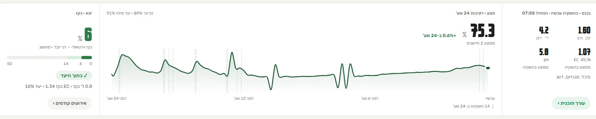

תקשורת
עם הצמח.
בינה מלאכותית שלומדת את החממה ואת הגידול שלכם, ומתרגמת את המידע לחיסכון במים, בדשן ובשיפור היבול.
להשקות לפי הצמח,
לא לפי השעון.
כשרואים מה קורה במצע, כל טיפה מגיעה בדיוק למקום הנכון.
מים.
משקים כשהמצע מתייבש, עוצרים כשהניקוז מגיע ליעד.
דשן.
ה-EC בניקוז מראה מה הצמח באמת קולט. מה שלא נספג – לא מוסיפים.
יבול.
צמח ללא עקה אינו מפיל פרי. מצע יציב מבטיח קטיף יציב.
להשתמש.
מסך אחד בטלפון ושיחה עם "ניטור", הסוכן הדיגיטלי שלכם.
עוזר אישי
שמכיר את הצמחים.
עוזר שמכיר את החלקות, הזנים, משטרי ההשקיה והדישון שלכם. מתייעצים איתו בדיוק כמו עם אגרונום שמלווה אתכם כבר עונות רבות.
- לומד
איך אתם מגדלים
נתוני השקיה, דישון, זנים ומועדי שתילה. בכל עונה הוא לומד להכיר אתכם טוב יותר.
- קשוב
לצורכי הצמח
החיישנים מדווחים מה מתרחש במצע, והעוזר משקלל זאת עם תנאי מזג האוויר ושלב הגידול.
- משקלל
לכדי תובנה אחת
המלצה והסבר מנומק המוכנים להזנה בבקר. אתם מחליטים – הוא זוכר.
חלקה 5: בשעות הבוקר ניתנו 300 ל' בלבד במשך 60 דקות (ספיקה נמוכה של 0.3 מ"ק לשעה), ובסיום ההשקיה התקבלה שגיאה. מומלץ לבדוק אם המסנן או הטפטפות נסתמו.
חלקה 4: הרטיבות גבוהה ויציבה (85%–86%), אך שק המדידה כמעט לא הפיק ניקוז לאחר השקיית הבוקר (0.12 ל' בלבד). נראה שהשורה עדיין בתהליך הרטבה לאחר היובש; אבדוק שוב מחר בבוקר.
חלקה 3: רמת הניקוז עלתה במשך היום (25% בבוקר ו-41%–43% בצהריים, עדיין מתחת לסף 50%). אם המגמה תימשך גם מחר, נפחית פולס אחד. חלקה 2: הפולסים המקוצרים פעלו כמתוכנן. חלקה 1: פולס הצהריים השיג את מטרתו; הרטיבות נשמרה על 60%–61.7% לאורך כל היום, במרחק בטוח מהסף. חלקות 6–7: תקינות לחלוטין.
יום
לדוגמה.
מה רואים על המסך, וכיצד פועלים לפיו.
- 06:00
בוקר
סקירת נתוני הלילה על המסך. העוזר מגבש את תוכנית ההשקיה להיום; אתם מאשרים ומעדכנים בבקר.
- 12:30
צהריים
קרינת שמש חזקה וקצב צריכה מוגבר בצמחים. העוזר ממליץ לצמצם את מרווחי ההשקיה; אתם מאשרים.
- 17:45
ערב
זוהה ניקוז נמוך בתעלה 2. התראה נשלחת ישירות לטלפון – מחר בודקים את הטפטפת, לפני שהפרי ייפגע.

פתרון כולל,
לא רק ציוד.
מודדים רק מה שהגידול צריך. ההתקנה כלולה כחלק בלתי נפרד מהפרויקט.
-
מדידה במצע או בקרקע
לחות, חומציות, מוליכות, הזנה, טמפרטורה ונקז.
-
איסוף נתונים ולמידה
התממשקות לרוב בקרי ההשקיה הנפוצים. הנתונים מוזרמים לענן, והמערכת לומדת את מאפייני החממה.
-
שליטה וניטור
בטלפון ובמחשב. מעקב בזמן אמת, סיכום לילה והתראות מידיות במקרה של חריגה.
- הנתונים נשארים שלכם. גישה מלאה בשרת פרטי או בענן, עם אפשרות מלאה לייצוא נתונים.
- מתאים גם לקרקע. מטעים, גידולי שדה ועוד – התאמת חיישנים ייעודית לפי סוג הגידול.
- צומח עם העסק שלכם. מתעלה בודדת ועד למערכים של עשרות אלפי צמחים.
- נשען על ניסיון מעשי. פותח בשטח ונבחן בתנאי גידול אמיתיים.
בואו נשמע
מה הצמח אומר.
ספרו לנו מה אתם מגדלים ובכמה תעלות מדובר – ונחזור אליכם עם הצעה מותאמת.
054-6324746info@nitur-ai.com